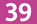
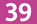

There is no cost for participants apart from providing their time, curiosity and open-mindedness.
using participatory and non-hierarchical methods, by volunteers with diverse backgrounds that allow us to integrate multiple perspectives.
to broaden accessibility of science and technology . Especially for those who are often excluded since their disability, identity or social background does not correspond to that of the typical image of a geek.
You can find a more detailed program here.
Because of limited capacity, the (optional) registration for workshops will be open each day in the morning and after lunch for people willing to make sure to be able to attend the workshops.
Pay as you wish dinner on Saturday and lunch on Saturday and Sunday will be served.
10h
Opening doors
10h30
12h
Break - Lunch
13h30
15h
16h30
18h
19h30
Break - Diner
20h30
22h30
Closing
10h
Ouverture des portes - Accueil
10h30
12h
Break - Lunch
13h30
15h
16h30
18h
Mot de la fin - Apéro
19h
Final closing
The CoFestival is an independent event which is free of charge and which aims at promoting two key aspects:
We wish to share and transfer scientific and technological know-how in an accessible and inclusive way, in order to encourage learning and reusing knowledge by anyone who is interested.
because science and technology can also be exclusionary and closed, we want to create a space for sharing and reflecting about possible strategies to change this. We know that the scientific and technological expertise so valued today can also be a means to discriminate and create a power inbalance between those who master it and those who don’t. We want to break through the wall that allows this inequality.
By proposing different formats and events (technical and fun workshops, unconferences, debates, artistic performances, “conférences gesticulées” - theatre-conferences), we want to make your neurons dance and glow!
We are committed to making the CoFestival accessible and welcoming to everyone, in accordance with the principles of our code of conduct which we kindly invite you to read.
Please respect CoFestival values by providing a welcoming and inclusive environnement in each workshop, conference and in any other activity during the festival !
Here are some guidelines so that your participation reflects the spirit of the CoFestival:
If you have any concerns pertaining to your workshop/talk or about your material, please don't hesitate to discuss them with us on the discussion@cofestival.org mailing list, where someone will be able to give you advice.
To help with the organisation, or to ask us questions, you can contact us on our mailing list: discussion@cofestival.org and you can sign up here.
The CoFestival will take place on the Mozilla Paris premises : 16 bis boulevard Montmartre, Paris 9e.
Richelieu Drouot

Grands Boulevards
Le Peletier

Bourse

Bus
 
